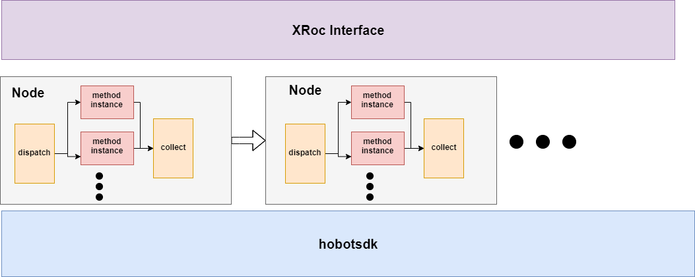
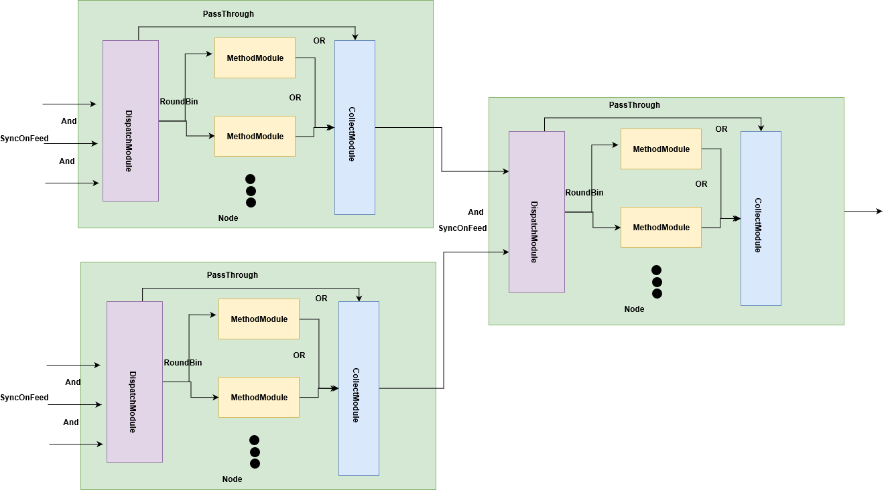

XStream hobotsdk engine¶
hobotsdk是地平线成熟的面向数据流的编程框架，xstream framework通过配置可以选择将hobotsdk作为底层驱动引擎，解决数据依赖、流式驱动与线程管理等核心问题．
bazel 编译开启 hobotsdk engine¶
在命令行添加 –define xstream_engine=hobotsdk即可，如:
bazel build -s //xstream/framework:test_all --define xstream_engine=hobotsdk --verbose_failures --spawn_strategy=local
CMake编译开启hobotsdk engine¶
在根CMakeList中打开控制hobotsdk engine的开关即可：option(XSTREAM_HOBOTSDK_ENGINE "choose hobotsdk engine" ON)
基础架构¶

Node: 作为管理多个同类型method实例的抽象，由３种基础module组成：
Dispatch Module: 负责将连续帧消息分发到多个method实例上，默认策略为Round-Robin;同时可根据工作流的控制参数，将输入消息直接passthrough到Node的输出模块(CollectModule).
Method Module: load method方法，负责method实例的执行．
Collect Module: Node的输出模块，将Method Module的处理结果或者来自Dispatch Module passthrough的结果分发到下一级Node.
Node内部module及Node之间的连接方式¶

Node内部Dispatch Module与method Module之间是默认的连接方式即AllExp(多个输入之间是and的关系，且每个输入每次取一个);
Dispatch Module到Collect Module的passthrough的连接，以及method module到Collect Module的连接之间是OR表达式;
Node之间的连接是通过上一级输出CollectModule连接到下一级的输入DispatchModule, 默认也是AllExp.
另外XStream框架的计算是帧内计算，因此输入DispatchModule还要调用hobtsdk接口SyncOnFeed()保证每次来自多个slot的输入消息都属于于同一帧．
线程模型¶
调用hobotsdk engine的bool ExecuteOnThread(Module *module, int forward_index, int thread_index)可设置每个module运行线程id,从而轻松实现线程分配、共享等。
用户可指定的线程id合法范围为[0, 999];
DispatchModule与CollectModule并不负责业务计算，主要完成消息的分发和收集，实际负载比较小，为避免产生过多线程，同时又兼顾效率，分别为所有DispatchModule与CollectModule预留了一个线程，线程id分别为1000与1001, 因此基于hobotsdk的引擎实际分配的线程数为
用户指定线程数+2.从1100开始的idx，作为内部自动生成的idx，若用户没有明确指定thread配置参数，或者使用thread_count只指定线程数量，没指定具体的thread idx(使用thread_list配置参数可指定具体的thread idx)，内部会从1100自动生产id.
// user thread idx: 0~999;
// reserved thread_idx: 1000 ~1099
// auto-produce thread_idx:1100~INT_MAX
#define XSTREAM_DISPATCH_THREAD_IDX 1000
#define XSTREAM_COLLECTION_THREAD_IDX 1001
#define XSTREAM_AUTO_PRODUCE_THREAD_IDX_BASE 1100
收集结果¶
利用hobotsdk的Obsever模式，可以收集workflow输出． 和原生引擎一样，收集结果在单线程上（CollectModule对应的线程）完成的，因此在收集结果时也不需要加锁保护．
method的初始化¶
XStream的method的初始化在method属性thread_safe=false时需要在执行业务的线程上执行，且要在workflow的初始化阶段完成，不建议采用lazy的方式;为实现这种方式，在workflow的初始化末尾会给workflow发送一次INIT消息完成每个method实例的初始化．
实现method reorder属性¶
当method设置了is_need_reorder属性时，输入的消息帧需要按顺序处理;
hobotsdk提供了接口void SyncOnFeed(Module *module, int forward_index, std::vector<int> input_slots, bool order_by_feedid)可以设置某个module的输入消息按Feedid的大小顺序处理，但是hobotsdk的排序是基于当前对应Module看到id，比如如果Module当前只看到Feedid为｛10, 12, 13}输入消息，即使feedid=11的消息还没到来，该module一样会顺序处理｛10, 12,13}，并不会等待11出现，但是xstream要求的顺序中间是不能有空缺的，也就是如果feedid=11尚未出现，{12, 13}的处理需要先等待11到来．为了实现XStream的顺序要求，每个Node的输入Dispatch Module都添加了一个input param的link，这个link有两个作用：
传递每帧的输入参数，数据结构为InputParamPtr,该消息可以更新method的参数，也可以控制workflow数据流的处理，比如在线disable某个node等．
参数消息在Input的时候Feed,能保证每个node第一时间看到所有需要处理的frame，从而保证XStream顺序处理连续、中间不能有空缺的帧序要求．

对多路输入的支持¶
多路输入在支持is_need_reorder属性时，要求每个输入通道分别排序，hobotsdk不能区分不同的输入源，因此上一节的排序trick没法支持多路输入的场景;因此针对多路输入实现了一个独立的dispatch Module,即ReorderDispatchModule,该Module会完成按输入源的排序和分发工作．